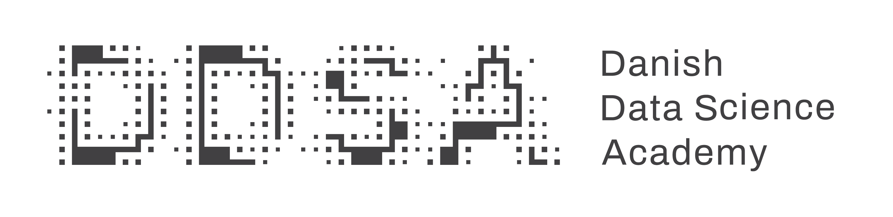

LOCO 2026
The 1st Workshop on Learning and Optimal COntrol
10th of September, 2026 · Copenhagen, Denmark
About LOCO 2026
The Workshop on Learning and Optimal COntrol (LOCO) aims to bring together researchers working on optimal control and learning in dynamical systems from different disciplines and backgrounds, including control theory, statistical learning, online optimization and reinforcement learning, and formal methods of learning and action.
The workshop aims to create a focused setting for scientific exchange, open discussion, and collaboration across institutions and research communities.
LOCO 2026 is a P1 workshop.
Sponsors

